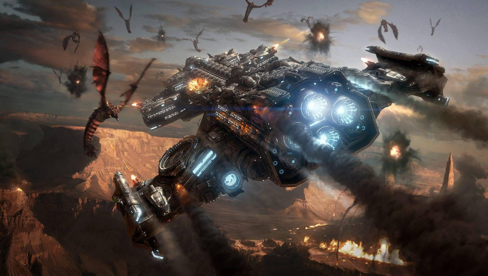
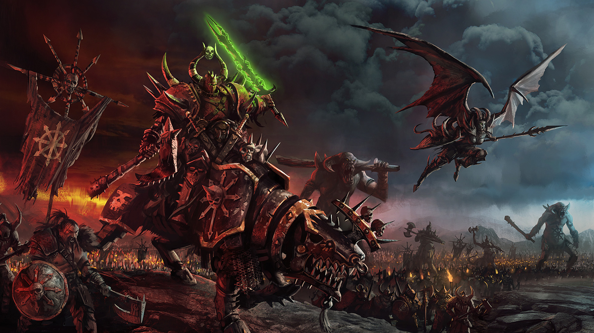
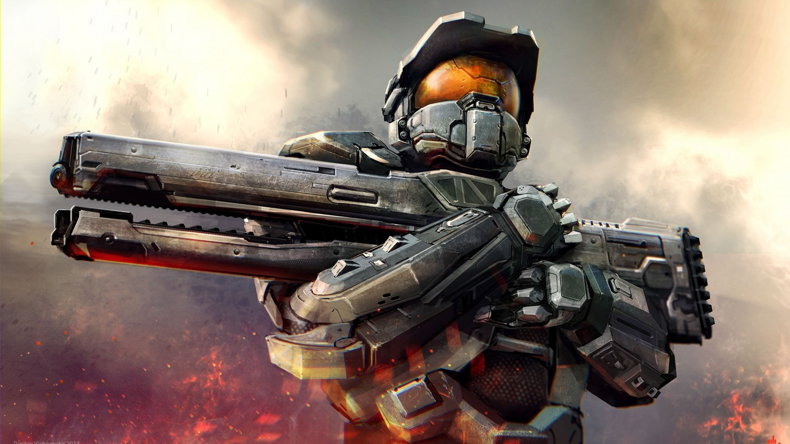
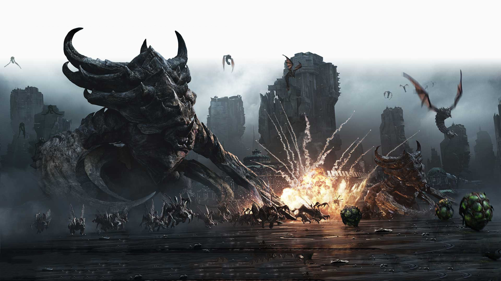
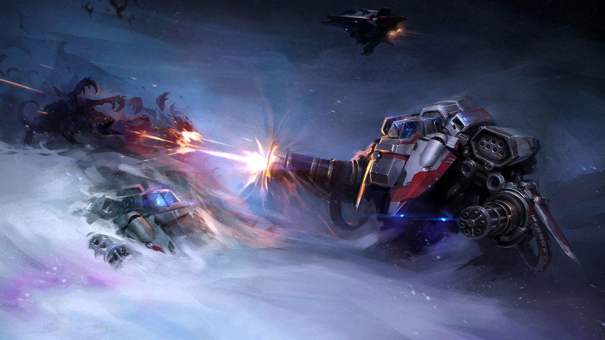
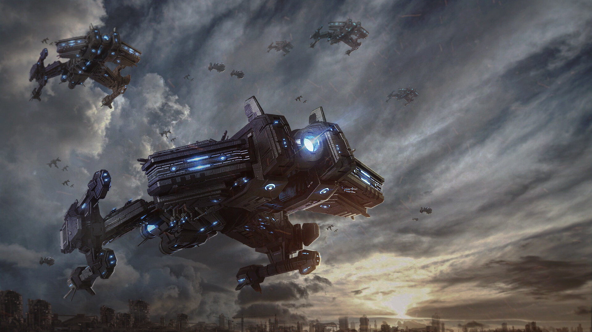
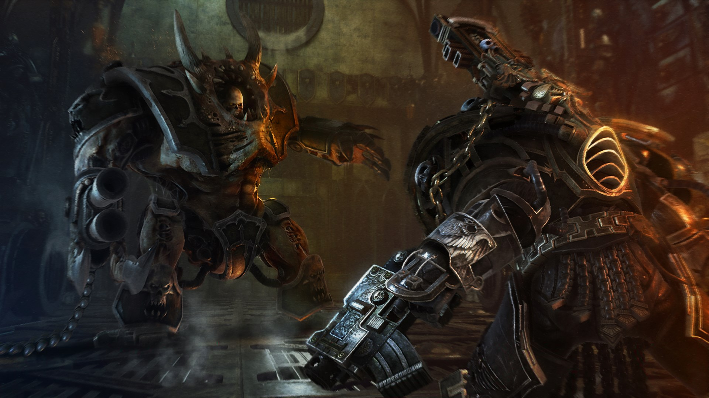

Strategy games
Strategy video games are a genre of video game that emphasize skillful thinking and planning to achieve victory. Specifically, a player must plan a series of actions against one or more opponents, and the reduction of enemy forces is usually a goal. Victory is achieved through superior planning, and the element of chance takes a smaller role. In most strategy video games, the player is given a godlike view of the game world, and indirectly controls game units under their command. Thus, most strategy games involve elements of warfare to varying degrees, and feature a combination of tactical and strategic considerations. In addition to combat, these games often challenge the player's ability to explore, or manage an economy.
Even though there are many action games that involve strategic thinking, they are seldom classified as strategy games. A strategy game is typically larger in scope, and their main emphasis is on the player's ability to outthink their opponent. Strategy games rarely involve a physical challenge, and tend to annoy strategically minded players when they do. Compared to other genres such as action or adventure games where one player takes on many enemies, strategy games usually involve some level of symmetry between sides. Each side generally has access to similar resources and actions, with the strengths and weaknesses of each side being generally balanced
Even though there are many action games that involve strategic thinking, they are seldom classified as strategy games. A strategy game is typically larger in scope, and their main emphasis is on the player's ability to outthink their opponent. Strategy games rarely involve a physical challenge, and tend to annoy strategically minded players when they do. Compared to other genres such as action or adventure games where one player takes on many enemies, strategy games usually involve some level of symmetry between sides. Each side generally has access to similar resources and actions, with the strengths and weaknesses of each side being generally balanced
Units and conflict
The player commands their forces by selecting a unit, usually by clicking it with the mouse, and issuing an order from a menu. Keyboard shortcuts become important for advanced players, as speed is often an important factor. Units can typically move, attack, stop, hold a position, although other strategy games offer more complex orders. Units may even have specialized abilities, such as the ability to become invisible to other units, usually balanced with abilities that detect otherwise invisible things.
Some strategy games even offer special leader units that provide a bonus to other units. Units may also have the ability to sail or fly over otherwise impassable terrain, or provide transport for other units. Non-combat abilities often include the ability to repair or construct other units or buildings.
Even in imaginary or fantastic conflicts, strategy games try to reproduce important tactical situations throughout history. Techniques such as flanking, making diversions, or cutting supply lines may become integral parts of managing combat. Terrain becomes an important part of strategy, since units may gain or lose advantages based on the landscape.
Some strategy games even offer special leader units that provide a bonus to other units. Units may also have the ability to sail or fly over otherwise impassable terrain, or provide transport for other units. Non-combat abilities often include the ability to repair or construct other units or buildings.
Even in imaginary or fantastic conflicts, strategy games try to reproduce important tactical situations throughout history. Techniques such as flanking, making diversions, or cutting supply lines may become integral parts of managing combat. Terrain becomes an important part of strategy, since units may gain or lose advantages based on the landscape.

Economy, resources and upgrades
Strategy games often involve other economic challenges. These can include building construction, population maintenance, and resource management.Strategy games frequently make use of a windowed interface to manage these complex challenges. Most strategy games allow players to accumulate resources which can be converted to units, or converted to buildings such as factories that produce more units. The quantity and types of resources vary from game to game. Some games will emphasize resource acquisition by scattering large quantities throughout the map, while other games will put more emphasis on how resources are managed and applied by balancing the availability of resources between players. To a lesser extent, some strategy games give players a fixed quantity of units at the start of the game.
Strategy games often allow the player to spend resources on upgrades or research. Some of these upgrades enhance the player's entire economy. Other upgrades apply to a unit or class of units, and unlock or enhance certain combat abilities. Sometimes enhancements are enabled by building a structure that enables more advanced structures. Games with a large number of upgrades often feature a technology tree, which is a series of advancements that players can research to unlock new units, buildings, and other capabilities. Technology trees are quite large in some games, and 4X strategy games are known for having the largest.
Strategy games often allow the player to spend resources on upgrades or research. Some of these upgrades enhance the player's entire economy. Other upgrades apply to a unit or class of units, and unlock or enhance certain combat abilities. Sometimes enhancements are enabled by building a structure that enables more advanced structures. Games with a large number of upgrades often feature a technology tree, which is a series of advancements that players can research to unlock new units, buildings, and other capabilities. Technology trees are quite large in some games, and 4X strategy games are known for having the largest.

Map and exploration
Early strategy games featured a top-down perspective, similar in nature to a board game or paper map. Many later games adopted an isometric perspective. Even with the rise of 3D graphics and the potential to manipulate the camera, games usually feature some kind of aerial view. Very rarely do strategy games show the world from the perspective from an avatar on the ground. This is to provide the player with a big picture view of the game world, and form more effective strategies.
Exploration is a key element in most strategy games. The landscape is often shrouded in darkness, and this darkness is lifted as a player's units enters the area. The ability to explore may be inhibited by different kinds of terrain, such as hills, water, or other obstructions. Even after an area is explored, that area may become dim if the player does not patrol it. This design technique is called the fog of war, where the player can see the terrain but not the units within the explored area. This makes it possible for enemies to attack unexpectedly from otherwise explored areas.
Exploration is a key element in most strategy games. The landscape is often shrouded in darkness, and this darkness is lifted as a player's units enters the area. The ability to explore may be inhibited by different kinds of terrain, such as hills, water, or other obstructions. Even after an area is explored, that area may become dim if the player does not patrol it. This design technique is called the fog of war, where the player can see the terrain but not the units within the explored area. This makes it possible for enemies to attack unexpectedly from otherwise explored areas.

Strategy versus tactics
Most strategy video games involve a mix of both strategy and tactics. "Tactics" usually refer to how troops are utilized in a given battle, whereas "strategy" describes the mix of troops, the location of the battle, and the commander's larger goals or military doctrine. However, there is also a growing subgenre of purely tactical games, which are referred to as real-time tactics, and turn-based tactics. Game reviewers and scholars sometimes debate whether they are using terminology such as "tactics" or "strategy" appropriately.
Chris Taylor, the designer of Total Annihilation and Supreme Commander, has gone so far as to suggest that real-time strategy titles are more about tactics than strategy. But releases that are considered pure tactical games usually provide players with a fixed set of units, and downplay other strategic considerations such as manufacturing, and resource management. Tactical games are strictly about combat,and typically focus on individual battles, or other small sections in a larger conflict.
Chris Taylor, the designer of Total Annihilation and Supreme Commander, has gone so far as to suggest that real-time strategy titles are more about tactics than strategy. But releases that are considered pure tactical games usually provide players with a fixed set of units, and downplay other strategic considerations such as manufacturing, and resource management. Tactical games are strictly about combat,and typically focus on individual battles, or other small sections in a larger conflict.

Settings and themes
Strategy games can take place in a number of settings. Depending on the theatre of warfare, releases may be noted as naval strategy games, or space strategy games. A title may be noted for its grand strategic scale, whether the game is real-time,[ or turn-based. Strategy games also draw on a number of historical periods, including World War II, the medieval era, or the Napoleonic era. Some strategy games are even based in an alternate history, by manipulating and rewriting certain historical facts. It is also common to see games based in science fiction or futuristic settings, as well as fantasy settings.
Some strategy games are abstract, and do not try to represent a world with high fidelity. Although many of these may still involve combat in the sense that units can capture or destroy each other, these games sometimes offer non-combat challenges such as arranging units in specific patterns. However, the vast majority of computerized strategy games are representational, with more complex game mechanics.
Some strategy games are abstract, and do not try to represent a world with high fidelity. Although many of these may still involve combat in the sense that units can capture or destroy each other, these games sometimes offer non-combat challenges such as arranging units in specific patterns. However, the vast majority of computerized strategy games are representational, with more complex game mechanics.

Single player and massively multiplayer
Strategy games include single-player gameplay, multiplayer gameplay, or both. Single player games will sometimes feature a campaign mode, which involves a series of matches against several artificial intelligence opponents. Finishing each match or mission will advance the game's plot, often with cut scenes, and some games will reward a completed mission with new abilities or upgrades. Hardcore strategy gamers tend to prefer multiplayer competition, where human opponents provide more challenging competition than the artificial intelligence. Artificial intelligence opponents often need hidden information or bonuses to provide a challenge to players.
More recently, massively multiplayer online strategy games have appeared such as Shattered Galaxy from 2001. However, these games are relatively difficult to design and implement compared to other massively multiplayer online games, as the numerous player-controlled units create a larger volume of online data.
More recently, massively multiplayer online strategy games have appeared such as Shattered Galaxy from 2001. However, these games are relatively difficult to design and implement compared to other massively multiplayer online games, as the numerous player-controlled units create a larger volume of online data.
